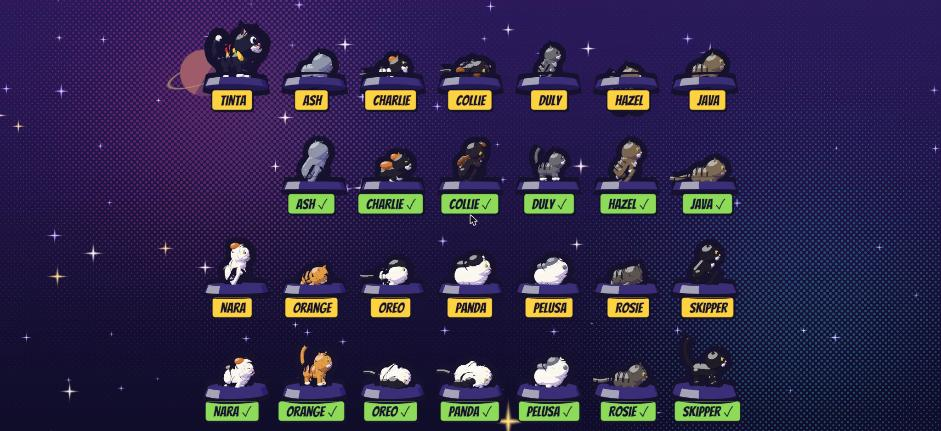
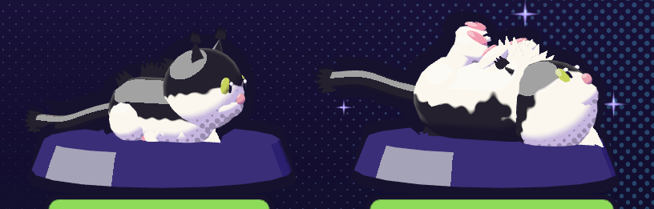
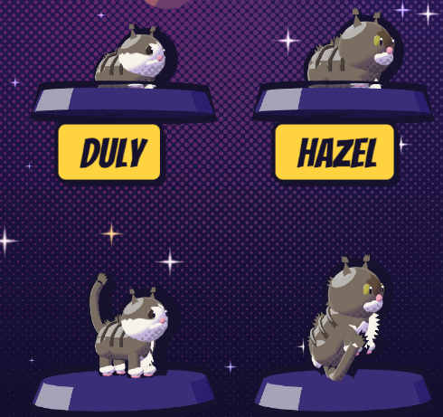
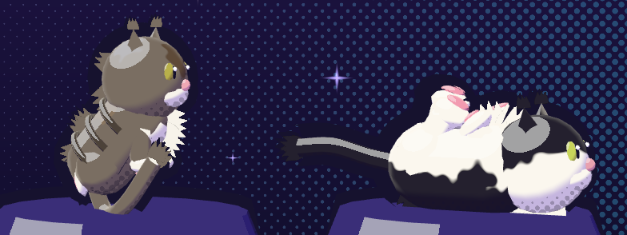
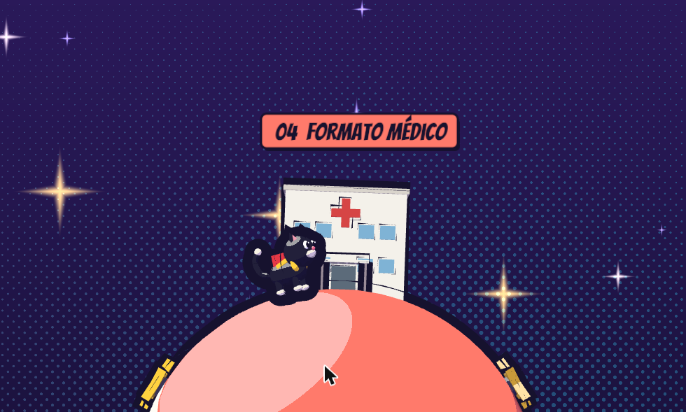

Planets of Code
Sebastian's 3D portfolio, redesigned as a guided comic tour: a cat courier walks around small planets in space, one per project, and the visitor turns the page with Next. The list, resume and contact are one click away from the first screen.
Where it stands
Built and checked
- Comic shading: two bands, halftone, ink outlines
- Hero Tinta, 13 secret cats from his own cats, 7 planets, 10 landmarks
- Guided walk, jump, hop arcs, Next / Back, planet strip
- Cover with skip paths, list dialog and no-WebGL fallback
- Phone, phone landscape, tablet and desktop layouts
- Reduced-motion cuts, EN/ES, AA palette
Next
- Sound (off by default) and haptics
- Cat list in the project dialog and saved progress (in progress)
- Landmark recolour, tap-to-walk, smoke tests, axe audit
- Fable: hero polish, data planet layout, phone perf pass
Answered by Sebastian
- Copy: "junior QA, data and developer roles" stays
- Hero name: Tinta
- Resume: direct PDF, now served by the site (EN/ES)
- The portfolio is Fable's own; Fable oversees its evolution
Pass 2: his cats, hops both ways, phone fixes





Secret cats
- Likeness from coat, patches, stripes, blaze, eye colour and size
- Photos give only the looks; each cat hides in its idle pose, then reacts: caught (freeze or startle hop) → tail-up greeting → its own end pose
- Chaotic cats add a zoomies lap around the planet or a dazed wobble
- Fur: jagged tufts on the silhouette, a soft ramp and a rim light in each coat's colour; ink only on the outer silhouette, none over the body
- Belly-up re-posed for the side camera, with toe-bean pads in the air
- Tinta is always drawn on top of buildings, planets and cats
- Toast names the cat: "Oreo found! 4 of 13 cats"
- Reduced motion: a calm slow blink instead; saved progress and a "Secret cats" list in the project dialog
- His photos stay private: never copied or published
Controls
- Two stars per planet: right hops forward, left hops back
- Hold Space or Jump 0.6 s on a star; let go early to cancel
- B, P, Backspace or Shift+Enter go back a stop
Fixes
- Touch Jump no longer fails when pointer capture throws
- Phones with "remove animations" see a small hop, not nothing
- Bottom-right 240 × 72 px kept free for Netlify's badge (standing rule)
Hero and world
Tinta, the courier cat
An original tuxedo cat with chibi proportions (head about 40% of the height), big comic eyes, a yellow scarf and a red jet pack that fires while airborne. Ears, tail curl and pack read as a silhouette at 60 px. It stops just left of each landmark and faces it.
Sebastian's 13 real cats hide on the planet undersides as easter eggs that never block the route.

Palette
UI tokens pass WCAG 2.1 AA in light and dark (checked with palette-check). Planet colours are fills only; text on them is always ink, at 7.1:1 or better.
UI
Planets (colour is the label)
Shading and outline rules
- Two flat bands. Lit colour and a shadow made by multiplying by violet (0.58, 0.50, 0.86). No gradients, no scene lights.
- Halftone dots, 7 CSS px, 45°, only in the shadow band. The always-on signature.
- Ink outlines by inverted hull at constant screen width: hero 1.5×, planets 1.3×, landmarks 1×.
- Type: Bangers for titles and sound-effect buttons only; Outfit 16 px+ for reading.
- One file owns all of it: src/space/comic.js.
The route
Aimed at junior QA, data and developer roles: real problems with real users or data go on planets, strongest first.
List only: "Earlier builds"
| Project | Why not on a planet |
|---|---|
| Brasa Food & Drinks | Static landing prototype; less depth than the tour projects. |
| Da Vinci Diary | Course-style notes app with login. |
| NASA APOD | Small API demo. |
| Gym Routine Generator | Course project on someone else's data. |
| Todo App | Tutorial-level CRUD. |
| Reddit Plus | Course project, no live demo. |
| Jammming | Course project, no live demo. |
How a visitor moves
flowchart LR C[Comic cover] -->|Start the tour| H[00 Hello card] C -->|Just show me the projects| L[Project list] C -->|Resume / Contact| X[Opens in a new tab] H -->|Next or Enter| P[Next stop] P -->|same planet| W[Walk to the stop, card pops] P -->|other planet| F[Hop arc, land, walk] W --> P F --> P P -->|strip dot or Fly there| F L -->|Fly there| F
| Action | Keyboard | Touch |
|---|---|---|
| Walk | ← → or A D | Hold ◀ ▶ |
| Jump (on the star: hop to the next planet) | Space, ↑, W | Jump |
| Next / previous stop | Enter or N / B | Next / Back |
| Fly to a planet | 0–6 | Strip dots |
| Project list, close | L, Esc | List, × |
Reduced motion: no arc, no roll or shake, a short fade between planets. Cards never steal focus; a polite live region announces planets and stops.
Screens checked in the browser


His other projects: fix first
A read-only scan of his project folders, with the riskiest claims checked. Full list, new project ideas and sources: docs/fable/research-projects-2026-11-10.md.
| # | Fix | Why | Effort |
|---|---|---|---|
| 1 | Ingresos App: replace the real restaurant figures in the README and test scripts | The repo is public and shows a client's receipt data | 20 min |
| 2 | Minoscreto: CI, LICENSE, README top with screenshot and "115 tests" | The 30-second QA signal | 1.5 h |
| 3 | Main portfolio: link ClassRoomAPIV2 for Angular/Spring Boot, or drop unproven skills | Interviewers ask about every listed skill | 15–30 min |
| 4 | Whisker Gacha: own repo, README, tested pity logic | Probability logic with tests is a strong talking point | 1 h + 2–3 h |
| 5 | Tests for Formato Médico, data science and Ingresos | Closes the QA gap across the strongest projects | 2–3 h each |
New project ideas (pick at most two)
- QA: test this 3D portfolio in public (Playwright + axe in CI), now PLAN task 14; or an API test suite on the NYC 311 or NASA APIs he already used.
- Data: messy Colombian open data (datos.gov.co) cleaned and explained with SQL; or one dashboard answering one business question.
- Dev: one merged pull request to an open-source project.
Roadmap
Full specs with files and acceptance checks are in docs/fable/PLAN.md.
| # | Task | Model | Difficulty | Time |
|---|---|---|---|---|
| 1 | Remove the old driving game and Rapier | Haiku | Easy | 15 min |
| 2 | Rewrite the README for the tour | Haiku | Easy | 20 min |
| 3 | Sound effects, off by default | Sonnet | Medium | 60 min |
| 4 | Haptics on touch devices | Haiku | Easy | 10 min |
| 5 | Hidden cats: 12, reaction and counter | Sonnet | Medium | 45 min |
| 6 | Recolour reused landmarks | Sonnet | Easy | 30 min |
| 7 | Tap to walk on touch | Sonnet | Medium | 40 min |
| 8 | First-visit controls caption | Haiku | Easy | 20 min |
| 9 | Keyboard help dialog | Haiku | Easy | 25 min |
| 10 | Accessibility audit with axe | Sonnet | Medium | 45 min |
| 11 | Playwright smoke test | Sonnet | Medium | 60 min |
| 12 | Cache headers and social image | Haiku | Easy | 20 min |
| 13 | Card tilt toward the pointer | Sonnet | Medium | 30 min |
| 14 | CI with build, smoke and axe tests; "How this site is tested" link | Sonnet | Medium | 45 min |
| F1–F5 | Hero polish, data planet layout, hop polish, phone performance, this page | Fable | Hard | 3–4 h |